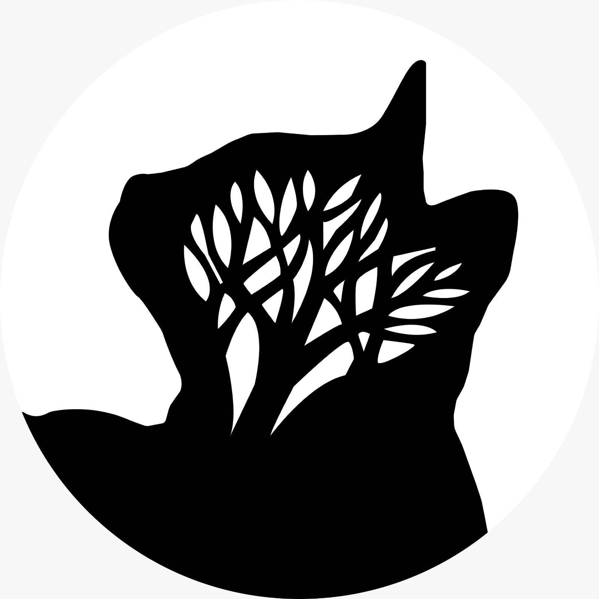

Observé cuándo se rompía el hábito: al dejar compras pendientes para capturarlas después, al mezclar deudas con gastos del mes y al depender del escritorio.
UX Designer · Product Design · UI Systems
Treecat Design
Portafolio UX enfocado en crear experiencias digitales claras, útiles y visualmente memorables. Diseño productos desde la investigación, estructura, interacción e interfaz final.

Sobre mí
Diseño productos claros para problemas cotidianos.
Soy Alejandro Ramírez y estoy construyendo mi camino como UX/UI Designer desde soluciones visuales y digitales reales.
Hormigon nació de una necesidad cercana: dejar de depender de una hoja de Excel para entender el dinero del mes. Me interesa diseñar productos claros, humanos y fáciles de usar; mi valor está en aprender rápido, iterar con feedback y convertir problemas cotidianos en experiencias mejor pensadas.
UX/UI Junior
Wireframes
UI Design
Feedback loops
Prototyping
Responsive Web
Proyecto 01
Hormigon
Una app creada para transformar el control del dinero en una experiencia simple, móvil e interactiva. El proyecto nace de una situación real: muchas personas no saben con claridad cuánto gastan, en qué se les va el dinero o cómo llegarán a fin de mes con deudas, compras a meses e ingresos variables.
Estadísticas accionables
Línea de tiempo de pagos
Presupuestos con límite
Metas de ahorro visibles
Proyecto 02
Innovadora: proyecto web real para empresa industrial
Proyecto secundario de UI/web para una empresa industrial. El enfoque fue ordenar la presencia digital, mantener una identidad visual reconocible y presentar productos, confianza y contacto comercial sin venderlo como un caso UX profundo.
Contexto
Una marca industrial necesitaba verse más clara en digital.
La página organiza empresa, productos y contacto para que clientes industriales entiendan rápido qué ofrece Innovadora.
Marca · Productos · Contacto
Objetivo
Convertir el sitio en una vitrina comercial directa.
Prioricé una lectura rápida de servicios, productos y vías de contacto, con una estructura lista para crecer.
Color · Pintura · Sistema visual
Decisiones visuales
Color, contraste y tono industrial como señales de marca.
El fondo tipo Pantone, el azul corporativo y los acentos rojos dan continuidad visual sin quitar claridad al contenido.
Home · Productos · Confianza
Resultado
Una experiencia responsive con personalidad industrial.
El diseño queda listo para crecer con fichas técnicas, catálogos, buscador de productos y contenido comercial. El aprendizaje fue equilibrar identidad fuerte con lectura práctica.
Responsive · Escalable · Comercial
Innovadora de Pinturas Industriales
Home visual con fondo Pantone, mensaje comercial directo y navegación enfocada en productos.
Una web con identidad de color y enfoque comercial.
Esta sección del portafolio toma los colores y el estilo artístico del inicio de Innovadora: tarjetas tipo Pantone, azul corporativo, acentos vivos y una maqueta web que resume el diseño del home.
Paleta
#005691 · #ff4757 · #ffd54f
Contenido
Empresa, productos y contacto
Experiencia
Responsive y fácil de explorar
Identidad
Fondo Pantone animado
Contacto
Diseñemos experiencias digitales con intención.
Disponible para proyectos UX/UI, rediseño web, prototipos, sistemas visuales y experiencias digitales responsive.